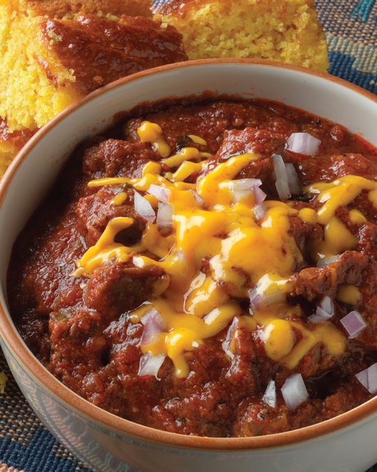

← Back to index
Chicken & Ham Jambalaya
Category: Soups and Leftovers

Ingredients
- ½ cup vegetable oil
- 1 ½ cups chopped onion
- 1 ¼ cups chopped green pepper
- 1 cup chopped celery
- 1 medium jalapeño pepper, seeded and minced
- Kosher salt and black pepper
- 2 tablespoons minced garlic
- 1 ½ pounds boneless, skinless chicken thighs, cut in 2-inch cubes
- 1 pound baked ham, cut in 1-inch cubes
- 2 cups chicken broth or stock (to make your own, see
Chicken Stock)
- 1 cup crushed tomatoes
- ½ cup
Mutha Sauce
- 1 bay leaf
- 1 ¾ cups parboiled long-grain rice (preferably Uncle Ben’s)
- Tabasco sauce
- 1 teaspoon dried thyme
- ¼ teaspoon cayenne pepper
- ½ cup sliced scallion
Instructions
- Pour the oil into a large Dutch oven and set it over medium-high heat. Once it’s hot, add the onions, green peppers, celery, and jalapeños. Season with salt and pepper and cook til soft and tinged with brown. Toss in the garlic and cook for 1 minute more; then add the chicken. Cook for about 4 minutes, turning the pieces and mixing them with the veggies.
- Stir in the ham and pour in the broth, tomatoes, and Mutha Sauce. Now drop in the bay leaf and dump in the rice. Give everything a stir, and spice it up with some Tabasco. Bring to a boil, then cover the pot and turn down the heat to a low simmer. Cook for 25 minutes without stirring.
- Uncover and fish out the bay leaf. Mix everything well. Season with lots of freshly ground black pepper, and add the thyme, cayenne, and scallions. Then spoon it up.
- Texas Red Chili
Notes
- Note: Here’s a double leftover idea. Take leftover jambalaya and stuff it into hollowed-out peppers or tomatoes. Bake at 350° til the veggie containers are soft, 30 minutes for tomatoes or 45 minutes for peppers. Serve with some Mutha Sauce ladled over the top.